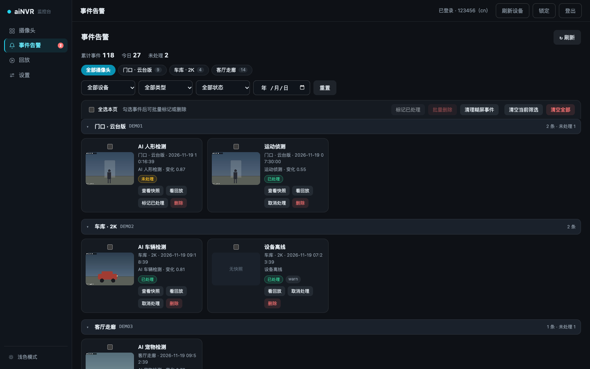
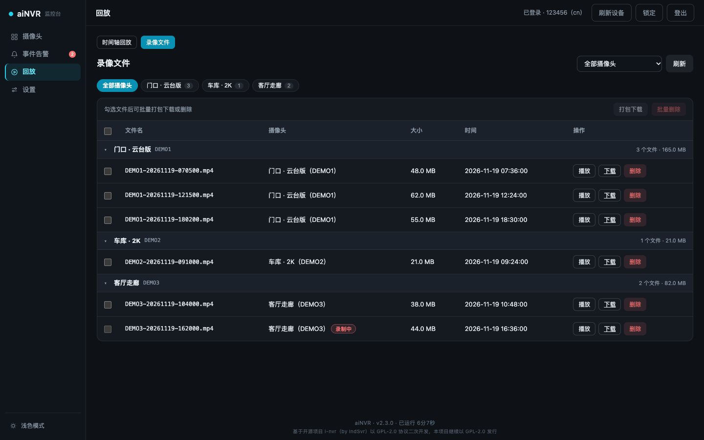
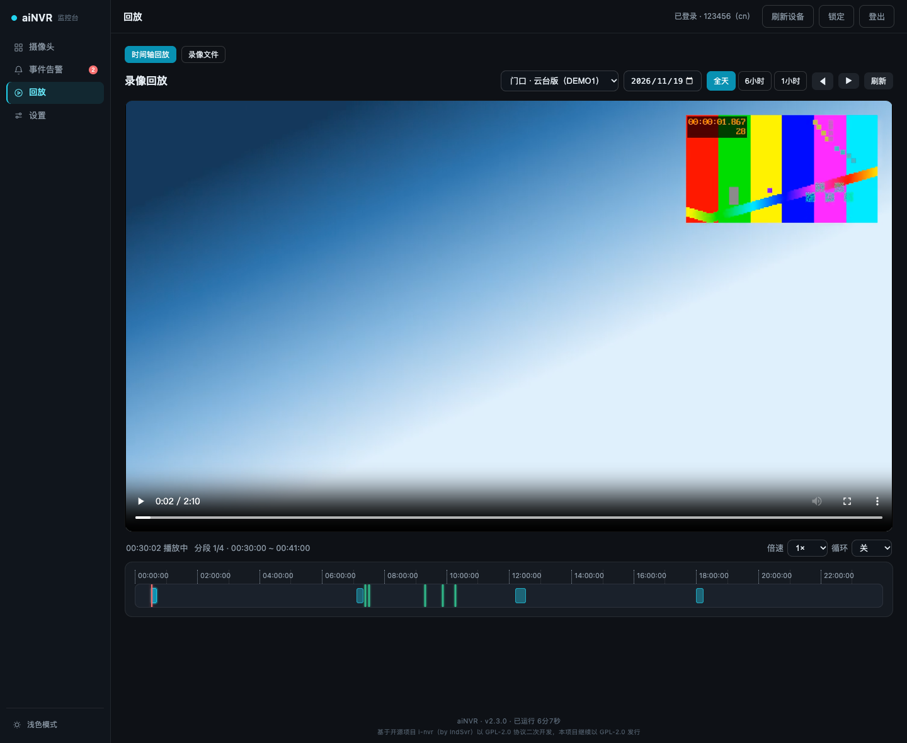
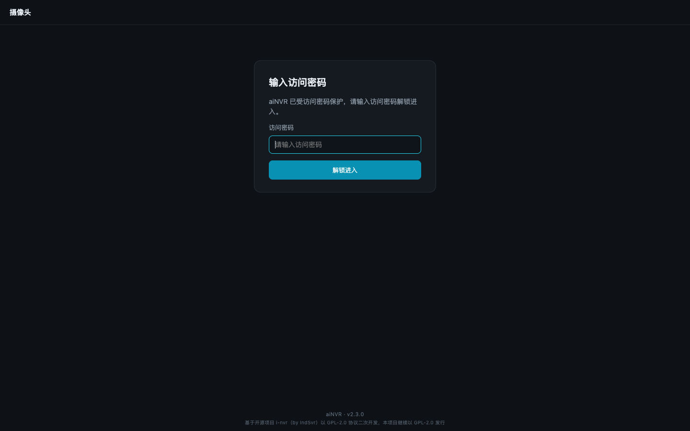
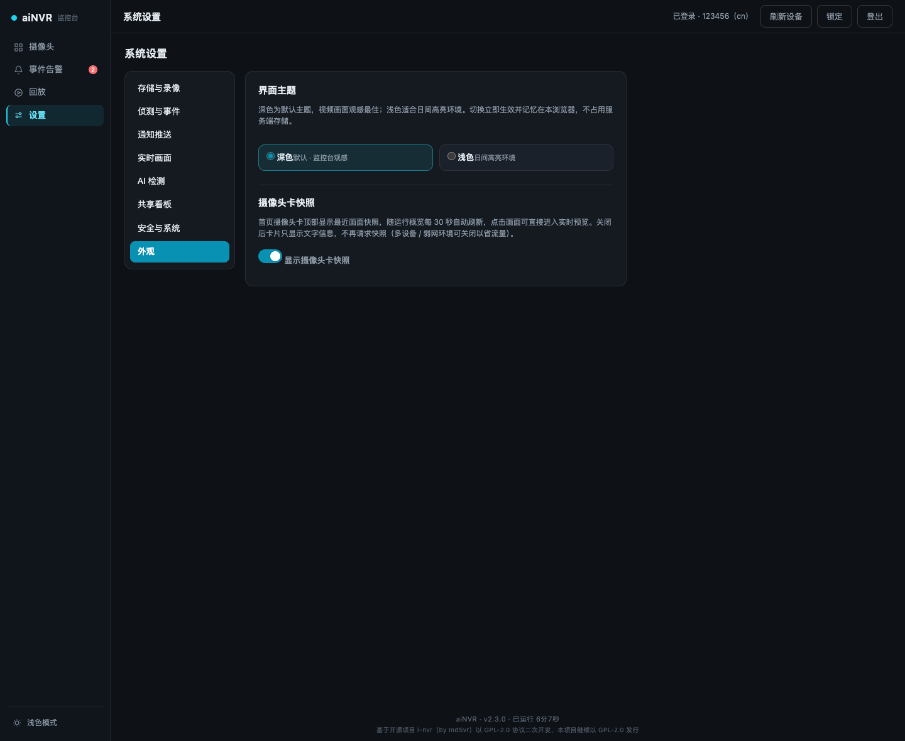

不依赖云录像、不需要刷固件、不开启 RTSP/ONVIF 也照用；所有识别与录像均在本地完成。
预览、RTSP、录像任意组合，对摄像头始终只建立 1 条连接；GOP 缓存秒开、断流自动重连、有界队列背压。
SSD-MobileNetV1 完全离线推理，把变动事件自动细化为 AI 人形 / 车辆 / 宠物检测，事件页按类型筛选。
感知哈希帧差 + ROI 排除区域 + 侦测时段计划，树影、马路、常亮屏幕不再误报；运动触发自动录像。
按天时间轴 + 变动事件刻度，分段无缝接续、双缓冲预载零等待切换，0.5×~16× 倍速与快捷键齐备。
4 / 9 / 6 宫格看板免鉴权直接挂 Android TV 长期展示；外部事件 Webhook 驱动事件摄像头全屏，60 秒自动复原。
Webhook（可选 HMAC 验签）与 SMTP 邮件双通道，按事件类型过滤、静默时段与失败退避重试。
访问密码门禁、一键解锁链接、API 密钥只存 SHA-256 摘要；会话凭据 AES-GCM 加密本地存储。
深色监控台主题为默认，浅色一键切换；桌面侧栏 / 移动端底部导航，未处理事件红点提醒。
应用中心安装 / 覆盖升级，数据目录自动迁移，配置一键备份恢复，GPLv2 许可随包发行。
深色监控台界面（默认主题）。以下截图均为合成演示数据，不含任何真实画面。





飞牛 fnOS 用户推荐直接安装应用包；其他环境可用源码构建，产物同样是一个可执行 jar。
在 Gitee Releases 下载 fpk 应用包（飞牛 fnOS），或克隆源码自行构建：
fnOS 应用中心上传安装 fpk，按向导登录米家账号（支持验证码与短信 / 邮箱二次验证），设置访问密码后进入监控台。
在「设置 → 侦测与事件」开启画面变动侦测，按需在「AI 检测」启用本地 AI 并下载模型，事件与录像即刻开始积累。